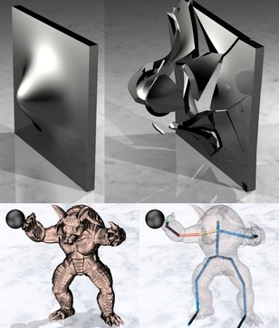

|

|
|
Abstract:
We present a novel method for the efficient denting and bending of rigid bodies without the need for expensive finite element simulations. Denting is achieved by deforming the triangulated surface of the target body based on a dent map computed on-the-fly from the projectile body using a Z-buffer algorithm with varying degrees of smoothing. Our method accounts for the angle of impact, is applicable to arbitrary shapes, readily scales to thousands of rigid bodies, is amenable to artist control, and also works well in combination with prescoring algorithms for fracture. Bending is addressed by augmenting a rigid body with an articulated skeleton which is used to drive skinning weights for the bending deformation. The articulated skeleton is simulated to include the effects of both elasticity and plasticity. Furthermore, we allow joints to be added dynamically so that bending can occur in a non-predetermined way and/or as dictated by the artist. Conversely, we present an articulation condensation method that greatly simplifies large unneeded branches and chains on-the-fly for increased efficiency.
|

![[PHOTO]](../../images/knight_small.png)